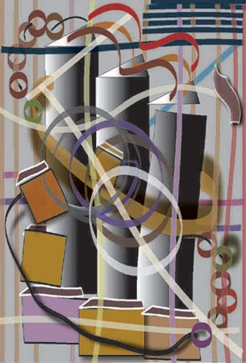

Joan Myerson Shrager
computer drawn art
Joan Myerson Shrager
computer drawn art
Joan Myerson Shrager has been a professional artist for over 25 years and has exhibited her work in over 50 juried and several solo shows. She has an undergraduate degree from the University of Pennsylvania and a masters degree from Temple University in psychology. She studied painting, sculpture and ceramics at Moore College of Art and Design, Tyler School of Art and the University of the Arts and taken many workshops. She is director of an artist-run cooperative in Philadelphia. For the past two years she been working exclusively on the computer and has been creating digital art using Illustrator and Photoshop with a Wacom tablet and stylus. She writes that she has never attended a class in computer art.
Plaid Construct Twirl
 |